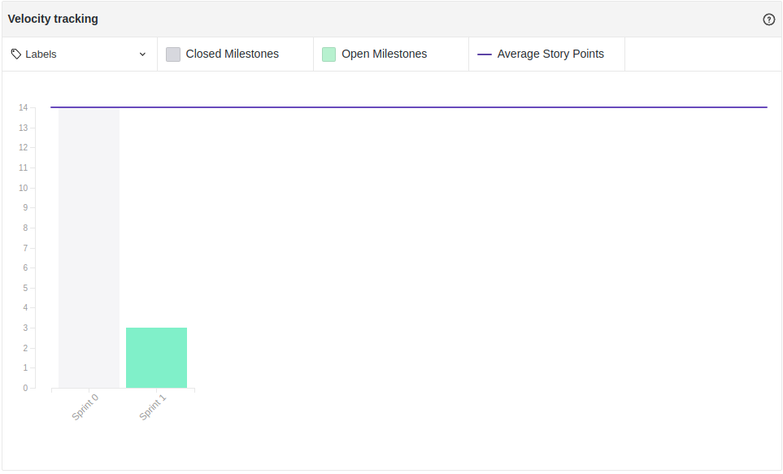

Fechamento da Sprint 0
1- Resumo da Sprint
Pontos concluídos: 14 pontos
-
Histórias Entregues:
Pode-se observar que todas as histórias previstas na Sprint foram entregues, devido a baixa complexidade, relacionadas a treinamento e organização do grupo.
2- Retrospectiva da sprint
| Pontos Positivos | Pontos Negativos | Sugestão de melhoria |
|---|---|---|
| Formação e integração do grupo | Entrega tardia do tema do projeto | equipe(MDS) olhar repositórios de trabalhos anteriores, para se familiarizarem com as documentações |
| Definição do tema confortável para todos | sprint 0 com término de mais de 2 semanas | --- |
| Transferência inicial de conhecimento bastante produtiva | não ter seguida a metodologia Scrum a risca(dailymeeting, reunião de término de Sprint) | --- |
| Visão inicial do que o produto pode ser | --- | --- |
3- Quadro de conhecimento

Este quadro mostra o conhecimento inicial de cada membro do grupo em cada área abordada no Sprint 0, que foi o git e a metodologia ágil, vemos que boa parte de mds nunca tinha lidado com o Scrum e tinham pouco contato com git. As outras áreas serão preenchidas nas próximas sprints, quando ocorrerá o treinamento e estudo individual de cada coluna.
4- Burndown

Percebe-se no gráfico que todas as histórias foram entregues, e as issues da Sprint foram executadas no decorrer de todo sua duração.
5- Velocity

Como esta foi a Sprint 0, o velocity desta Sprint não pôde ser comparado com outros para determinar como está o desempenho da equipe, mas servirá como ponto de partida para os outros que virão futuramente.
Análise do Scrum Master
Esta Sprint teve como objetivo fazer com que os integrantes de MDS e EPS tivessem o primeiro contato, que também pudéssemos saber da especialidade técnica de cada um, para que quando o tema do projeto fosse dado o time de eps pudesse tomar a melhor estratégia possível.
Na questão de passagem de conhecimento, foi bem produtivo os dojos, a metodologia de desenvolvimento junto com o git foi absorvido de maneira positiva pela equipe de MDS, teve um problema, mais tecnologias não puderam ser passadas justamente pela demora na definição dos temas de cada grupo.